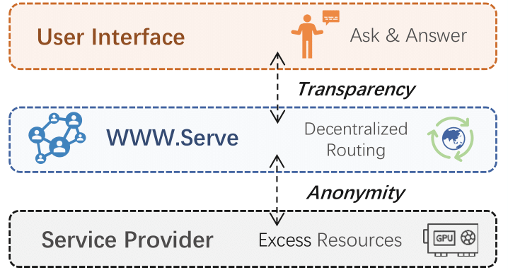
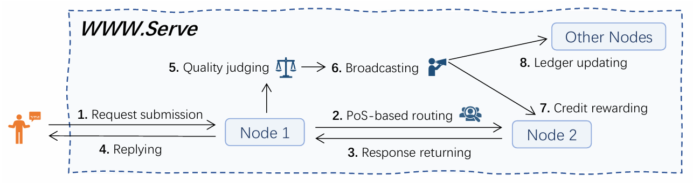
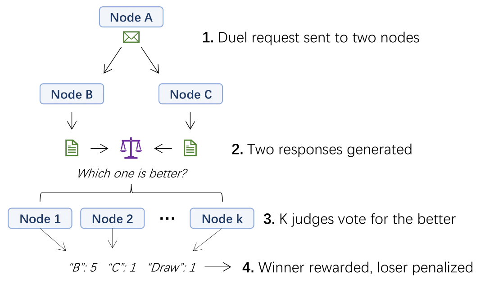
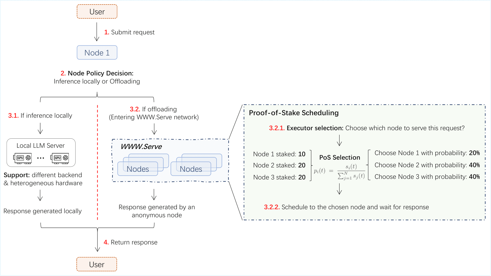
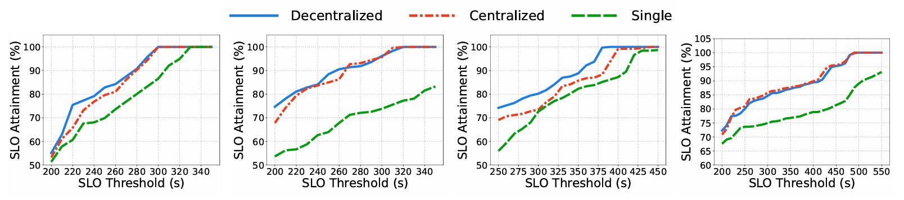
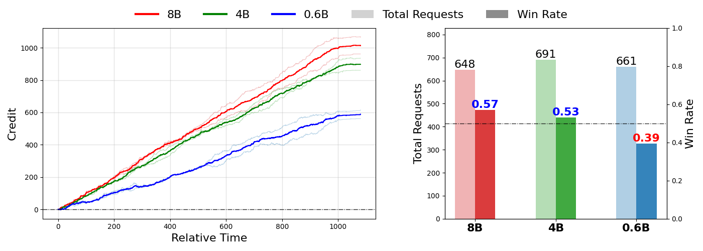
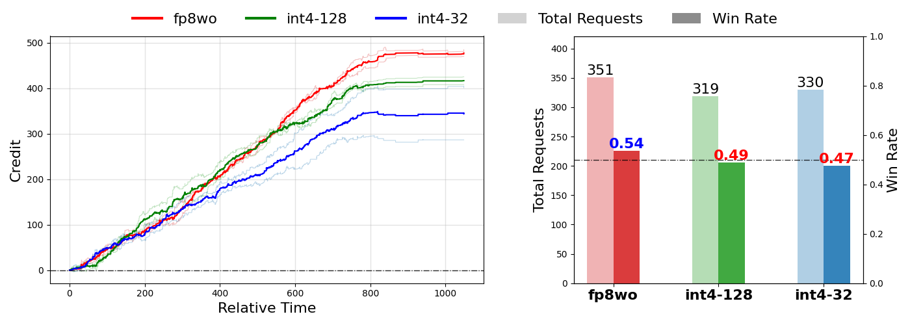
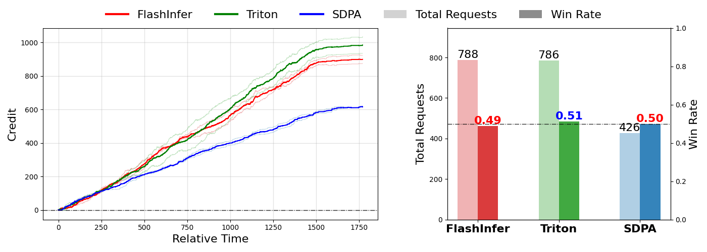
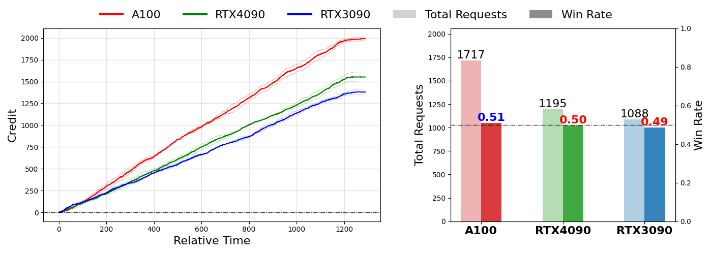

TL;DR
WWW.Serve is a decentralized framework that acts as an open and competitive market of global LLM services. It preserves the flexibility of service providers, allowing them to decide when, under what policies, and with what resources they join the market, while enabling autonomous request routing and computational capacity exchanging across distributed and anonymous LLM servers.

Introduction & Motivation
LLM services are mostly centralized, which leads to inherent scalability bottlenecks and leaves substantial GPU resources underutilized. While decentralization could potentially alleviate these issues, existing decentralized serving systems remain largely impractical in real-world settings. Specifically, they face two major limitations:
- Overemphasis on the cooperative aspect among GPU providers: Existing systems predominantly promote cooperation among GPU providers, but often overlook their inherent competitive dynamics. GPU providers, as holders of the computational assets, are naturally incentivized to maximize their own profit. However, current designs may impose rigid constraints, such as excessive platform-level oversight or requiring execution of all assigned requests on fixed software stacks and hardware configurations.
- Lack of workload flexibility: Providers typically maintain their own prioritized workloads, which may fluctuate over time. Existing systems rarely offer mechanisms for providers to flexibly control how and when they participate in the decentralized network.
We envision a decentralized framework that functions as an open, competitive market of LLM services, allowing providers to choose when, under what policies, and with what resources they participate. Such a system should meet three key requirements:
- Incentivized high-quality services: The framework should reward providers for delivering superior performance, including faster hardware, user-oriented scheduling, advanced serving systems, and high-quality models. These incentives further encourage innovation, enabling providers to offer better services at lower cost.
- Market-driven exchange of computational capacity: Overloaded servers should be able to outsource requests, while underutilized servers can capitalize on idle resources, allowing supply and demand of compute power to self-balance through decentralized interactions.
- Principled and resilient service: The system should incorporate robust routing protocols that improve global efficiency even under highly dynamic and unpredictable real-world resource availability.
To this end, we propose WWW.Serve, a decentralized framework for collaborative LLM serving, enabling request routing and workload balancing among distributed and anonymous LLM servers.

System Overview
At the heart of WWW.Serve are three core mechanisms that enable efficient, reliable, and flexible decentralized LLM serving, each addressing a key challenge in such networks:
- Credit-based Transaction System: Provides a reputation-like measure under anonymity. Nodes earn credits by executing delegated requests and spend credits when offloading their own tasks. Request routing follows a PoS-style scheduler, where a node’s chance of being selected is proportional to its staked credits. This allows overloaded nodes to offload work while underutilized nodes convert idle resources into future offloading capacity, forming a self-regulating, market-driven exchange of compute.
- Duel-and-Judge Mechanism: Ensures service quality in a competitive, anonymous environment. A subset of offloaded requests is evaluated through pairwise comparisons, rewarding the better response and penalizing the worse one (Figure 3). Credits thus redistribute dynamically according to service quality, discouraging low-quality providers and amplifying the influence of consistently strong performers.
- Gossip-driven Peer Synchronization: Maintains robustness under highly dynamic resource availability. Nodes periodically exchange peer-status information through lightweight gossip, enabling rapid detection of new, offline, or updated peers without centralized oversight. This keeps the network up-to-date and resilient despite frequent join/leave events.

Together, these mechanisms form a self-organizing ecosystem where nodes are motivated to contribute compute resources, maintain high service quality, and adapt to dynamic network conditions.
The request workflow is demonstrated in Figure 4: upon receiving a user query, a node decides whether to execute it locally or offload it to the network. Local execution leverages heterogeneous models and runtimes via a unified interface, enabling seamless participation of service providers with diverse hardware and software. For remote execution, the node selects a trustworthy executor using a Proof-of-Stake-based scheduler, forwards the request, and retrieves the response once processing is complete.

Evaluation
First, We evaluate the scheduling efficiency of WWW.Serve under heterogeneous models, diverse GPU hardware, and fluctuating workloads. In all settings, we compare three strategies: single-node deployment, centralized scheduling, and our decentralized scheduling, and measure global SLO attainment. As shown in Figure 5, WWW.Serve consistently achieves near-centralized efficiency, substantially outperforming single-node execution.

WWW.Serve is designed to operate under highly dynamic conditions, with nodes joining and leaving unpredictably. As illustrated in Figure 6, when new nodes join, the gossip-based protocol quickly detects them and redistributes requests, reducing latency. Conversely, node departures can temporarily increase load on remaining nodes, but WWW.Serve ensures continuous service.
The system also supports flexible user-level policies. Nodes with higher stake or acceptance frequency handle more delegated requests, while adjusting offloading frequency helps redistribute workloads under high pressure (Figure 7). These results show that WWW.Serve enables service providers to autonomously control their participation, balancing immediate performance with long-term benefit, and providing fine-grained control over both efficiency and incentives.
Quality Incentivization
To empirically demonstrate that WWW.Serve effectively incentivizes superior LLM serving, we design four controlled experiments, each consisting of three classes of nodes with varied capabilities. These experiments are designed to study how the system rewards higher-quality models, more advanced serving systems, and faster hardware.
- Model Capacity: We deploy three classes of nodes serving Qwen3-8B, Qwen3-4B, and Qwen3-0.6B models to study how model capacity influences credit accumulation. As shown in Figure 8, larger models obtain higher duel-and-judge win rates (0.57, 0.53, and 0.39, respectively), which is reflected in progressively faster credit growth from 0.6B to 8B.
- Quantization: We deploy three classes of nodes serving the same Qwen3-8B model with different quantization strategies (fp8wo, int4wo-128, and int4wo-32 based on torchao). As shown in Figure 9, more aggressive quantization consistently lowers duel-and-judge win rates (0.54, 0.49, and 0.47, respectively), which in turn slows credit accumulation.
- Serving Efficiency: We deploy three classes of nodes serving the same Qwen3-8B model with different attention backends (FlashInfer, Triton, and SDPA) to evaluate the impact of serving system efficiency on credit dynamics. As shown in Figure 10, more efficient attention backends achieve higher request throughput and serve a larger number of requests (788, 786, and 426, respectively). With comparable duel-and-judge win rates across backends, this throughput advantage directly translates into faster credit accumulation.
- Hardware: We deploy three classes of nodes serving the same Qwen3-8B model with different GPU hardware (A100, RTX4090, and RTX3090) to evaluate the impact of computational resources on credit dynamics. As shown in Figure 11, nodes with higher computational capacity and larger GPU memory achieve higher request throughput and serve a larger number of requests (1717, 1195, and 1088, respectively), which directly translates into faster credit accumulation.




These four controlled experiments collectively demonstrate that WWW.Serve rewards providers for delivering superior LLM service along both quality and efficiency dimensions. On one hand, nodes with higher model capacity or less aggressive quantization consistently achieve higher duel-and-judge win rates. On the other hand, nodes with more efficient serving backends or more powerful GPU hardware achieve higher throughput and more concurrent requests. Both factors contribute to credit accumulation.
Conclusion
We introduces WWW.Serve, a fully decentralized framework for trustless and collaborative LLM serving. Operating as an open, competitive market of global LLM services, it enables anonymous participants to autonomously route requests, balance workloads, and provide high-quality services. Our experiments demonstrate comparable scheduling efficiency along with strong adaptivity to dynamic resources and flexible serving policies, highlighting WWW.Serve’s potential as a scalable and privacy-preserving foundation for next-generation LLM services.
BibTeX
@misc{wang2026wwwserveinterconnectinggloballlm,
title={WWW.Serve: Interconnecting Global LLM Services through Decentralization},
author={Huanyu Wang and Ziyu Xia and Zhuoming Chen and Beidi Chen},
year={2026},
eprint={2603.20661},
archivePrefix={arXiv},
primaryClass={cs.DC},
url={https://arxiv.org/abs/2603.20661},
}